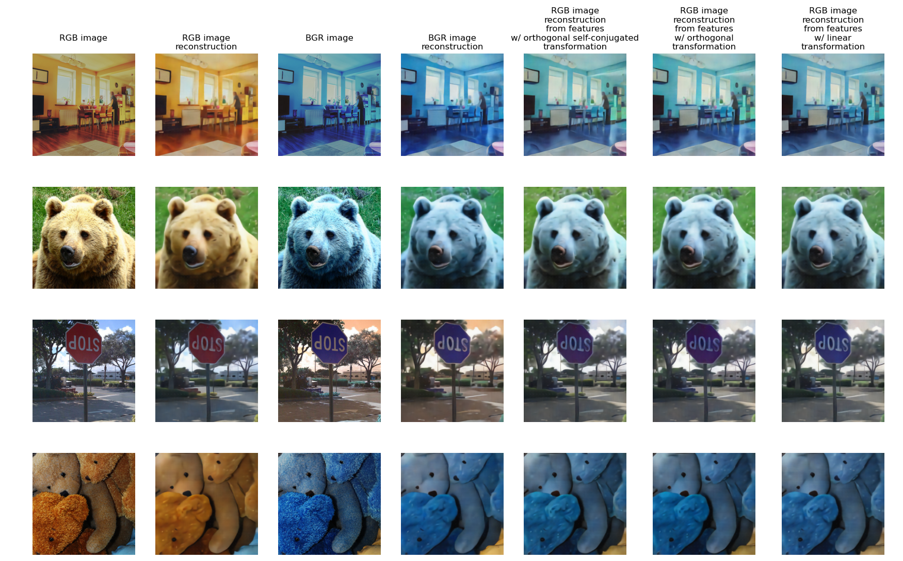

Q Matrix: A Tool for Feature Manipulation
We introduce the Q matrix framework that enables controlled manipulation of feature representations. This orthogonal transformation matrix is learned to perform specific image manipulations, revealing how visual attributes are encoded in the feature space.

Figure 3. Q matrix calculation process learns the transformation needed for specific image manipulations.

Figure 4. Application of Q matrix to feature embeddings enables controlled image manipulation.
Color Manipulation Studies
Using simple linear transformations in feature space, we demonstrate precise control over color attributes of reconstructed image. Our color manipulation studies serve as a validation of the feature interpretation hypothesis, supported by an image reconstruction approach.
Image Colorization
Colorization task - transforming grayscale images to their color counterparts. This problem requires following properties:
1. Semantic Requirement: Successful colorization necessitates that the feature space geometry encodes real-world knowledge about plausible color distributions for objects and scenes.
2. Non-algorithmic Nature: Colorization cannot be achieved through simple pixel-wise transformations but requires understanding of image semantics.

Figure 5. Our method enables controlled colorization through feature space manipulation, demonstrating the structured nature of color encoding.
Red-Blue Channel Swap
Properties we would expect from Red-Blue Channel Swap operator:
- Orthogonal — the operator should be orthogonal, meaning it should preserve the norm of the vector.
- Self-inverse — double application of Red Blue color swapping is Identity transformation in image space.
Eigenvalues of the operator will be close to +1 and -1.
As we will see further all this properties are somehow preserved even for Linear operator with no strict constraints on this properties.
We trained three different operators:
- Orthogonal self-conjugated — as a Procrustes solution with a long-range projection of the operator onto the space of self-conjugated operators.
- Orthogonal — as a Procrustes solution.
- Linear — as a regression problem. (Note that this solution cannot be directly used with the reconstructor, as it fails to preserve vector norms. Since the reconstructor was trained exclusively on normalized vectors, we first normalize the resulting outputs before feeding them to the reconstructor.)
As shown in Figure 7, the eigenvalues of all operators cluster along the real axis, indicating they primarily represent either eigenvector preservation (near +1) or inversion (near -1). While small deviations from these ideal values exist — revealing noise in the feature space — these perturbations remain relatively weak. Consequently, the feature space geometry largely preserves the properties expected from the pixel-space channel permutation operator.

Figure 6. Red-blue channel swap demonstrates precise control over color channels in feature space.

Figure 7. Eigenvalue analysis reveals that color transformations affect only specific feature dimensions while preserving others.
Blue Channel Suppression
Blue Channel Suppression operator will gradually suppress the blue channel of the image multiplying blue channel by some factor less than 1.
Properties we would expect from Blue Channel Suppression operator:
- Asymptotically this operator approaches a projection operator
Eigenvalues of the operator are either 1 or complex values with magnitude strictly less than 1.
We emperically observe this properties.

Figure 8. Selective suppression of the blue channel demonstrates fine-grained control over color attributes.

Figure 9. Eigenvalue distribution for blue suppression shows targeted modification of specific feature dimensions.